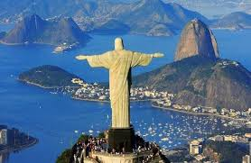

Río de Janeiro, Brasil
Río es la esencia de lo tropical. Su belleza es una mezcla inigualable de naturaleza exuberante y vida urbana: las playas de Copacabana e Ipanema se encuentran con el verde del Pan de Azúcar y la icónica estatua del Cristo Redentor. El ritmo de la samba y la calidez de su gente son inolvidables.
